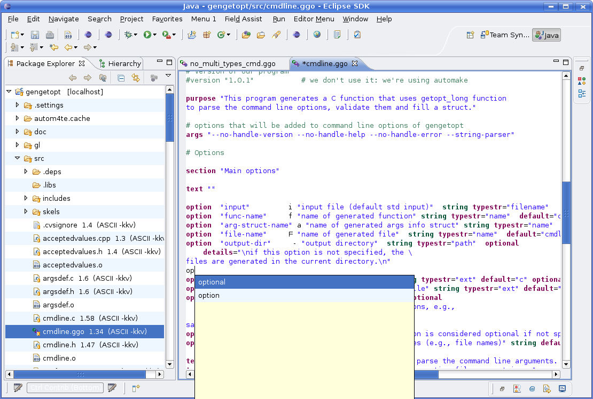

El Software
Traductores
- Un programa
- Recibe datos, opera con ellos y genera un resultado o salida
Traductores
- Un programa traductor
- Recibe datos que son a su vez un programa en algún lenguaje de programación
- Su resultado o salida es a su vez un programa en algún otro lenguaje de programación

Ensamblador x86
.globl _start
.text # seccion de codigo
_start:
movl $len, %edx # carga parametros longitud
movl $msg, %ecx # y direccion del mensaje
movl $1, %ebx # parametro 1: stdout
movl $4, %eax # servicio 4: write
int $0x80 # syscall
movl $0, %ebx # retorna 0
movl $1, %eax # servicio 1: retorno de llamada
int $0x80 # syscall
.data # seccion de datos
msg:
.ascii "Hola, mundo!\n"
len = . - msg # longitud del mensaje
Procesador x86
Ensamblador ARM
.global main
main:
@ Guarda la direccion de retorno lr
@ mas 8 bytes para alineacion
push {ip, lr}
@ Carga la direccion de la cadena y llama syscall
ldr r0, =hola
bl printf
@ Retorna 0
mov r0, #0
@ Desapila el registro ip y guarda
@ el siguiente valor desapilado en el pc
pop {ip, pc}
hola:
.asciz "Hello, world.\n"
Procesador ARM

Ensamblador PowerPC
.data # seccion de variables
msg:
.string "Hola, mundo!\n"
len = . - msg # longitud de cadena
.text # seccion de codigo
.global _start
_start:
li 0,4 # syscall sys_write
li 3,1 # 1er arg: desc archivo (stdout)
# 2do arg: puntero a mensaje
lis 4,msg@ha # carga 16b mas altos de &msg
addi 4,4, msg@l # carga 16b mas bajos de &msg
li 5,len # 3er arg: longitud de mensaje
sc # llamada al kernel
#
li 0,1 # syscall sys_exit
li 3,1 # 1er arg: exit code
sc # llamada al kernel
Procesador PowerPC

Lenguajes de programación
- Orientación a la máquina o al problema
- Lenguaje de alto nivel
- SALDO = DEUDA - PAGO
- Ensamblador
- LD DEUDA; SUB PAGO; ST DEUDA
- Código de máquina
- 01001010; 01101011; 10101010
Lenguajes y niveles
Lenguajes y niveles
Terminología
- Programa traductor
- Compilador
- Intérprete
- Archivo fuente
- Archivo objeto
- Bibliotecas
- Programa ejecutable
Traductores
- Compiladores
- Traducen un programa fuente en un ejecutable en código máquina
- La ejecución queda diferida para un momento posterior
- Intérpretes
- Traducen y ejecutan línea por línea un programa fuente
- Traducción y ejecución son concurrentes
Ciclo de compilación
Ciclo de compilación
Ciclo de compilación

Ciclo de compilación
Ciclo de compilación
Ciclo de compilación
Ciclo de compilación
Entorno integrado de desarrollo (IDE)
Paradigmas de lenguajes de programación
- Imperativo
- Seguir una lista de órdenes o comandos
- Lógico o declarativo
- Responder una pregunta buscando una solución
- Funcional
- Evaluar una expresión y utilizar el resultado
- Orientación a objetos
- Comunicar mensajes entre objetos simulando una parte del mundo real
1. Paradigma imperativo
Lenguaje C
int factorial(int n)
{
int f = 1;
while (n > 1) {
f *= n;
n--;
}
return f;
}
2. Paradigma lógico
Lenguaje Prolog
factorial(0,X):- X=1.
factorial(N,X):- N1=N-1, factorial(N1,X1), X=X1*N.
factorial(N):- factorial(N,X), write(X).
3. Paradigma funcional
Lenguaje Lisp
(defun factorial (n)
(if (= n 0)
1
(* n (factorial (- n 1))) ) )
4. Paradigma orientado a objetos
Lenguaje Python
class Combinatoria():
def factorial(self,n):
num = 1
while n > 1:
num = num * n
n = n - 1
return num
c = Combinatoria()
a = c.factorial(3)
print a